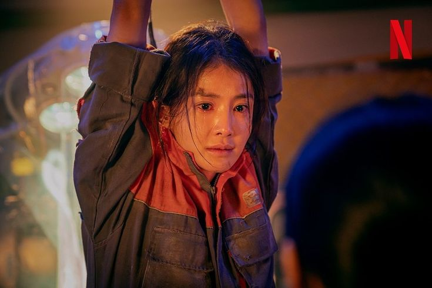

About Seo Yi-Kyung
Seo Yi-Kyung is one of the main characters in Sweet Home. She is portrayed by Lee Si-young. She is a former fighter from the Special Forces Unit and firefighter. She has great judgment and great combat skills.
Seo Yi-Kyung
Seo Yi-Kyung’s characterisctics
- She was engaged.
- She has a monster daughter
- She is very intelligent and strong.
- She is an Independent woman.
- She doesn't appear in the webtoon version.